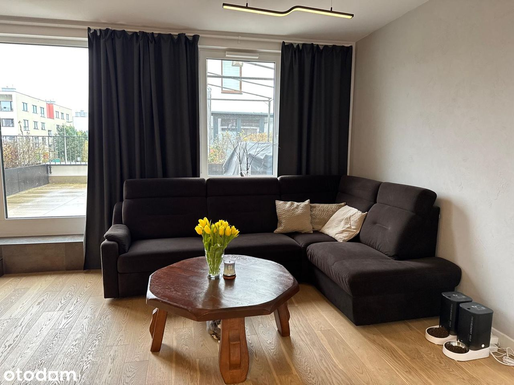
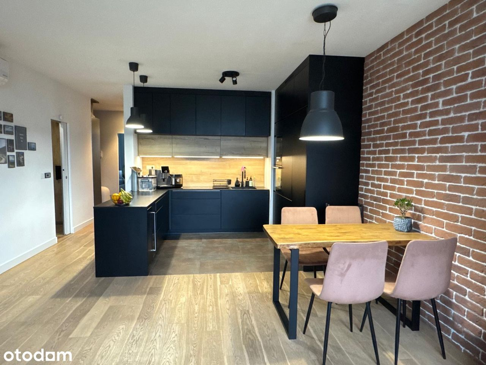
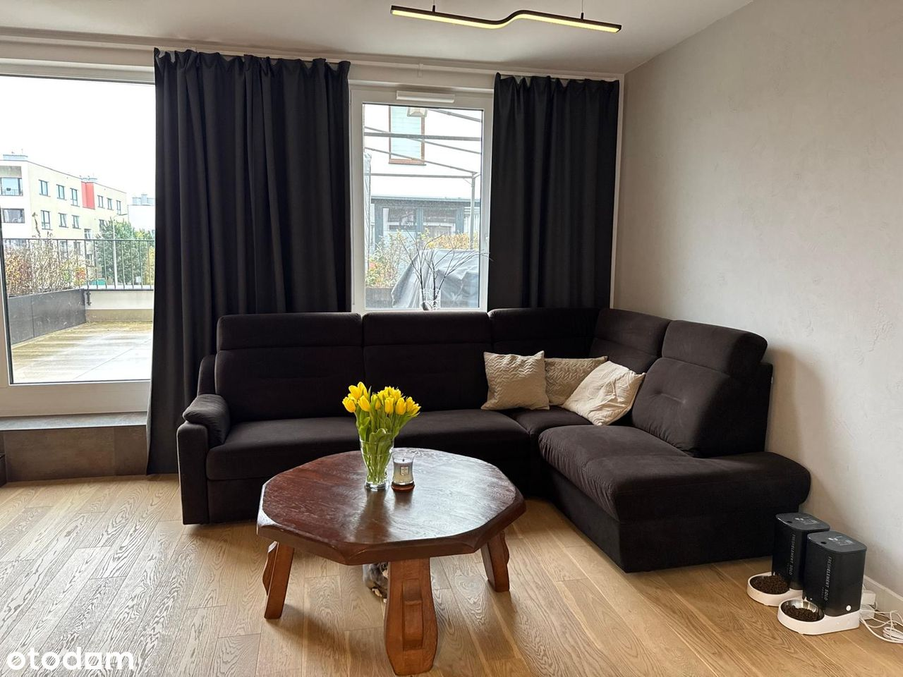
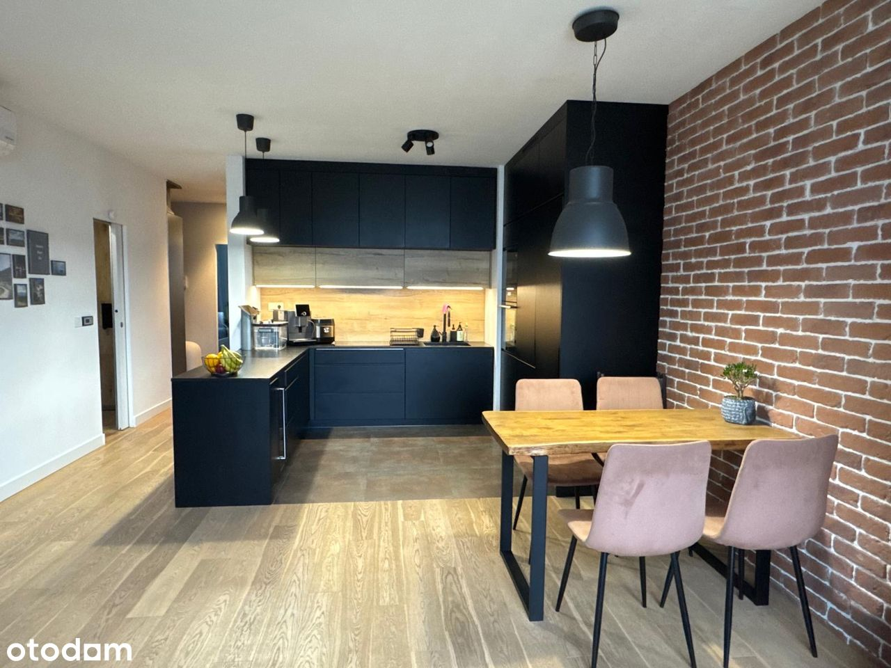
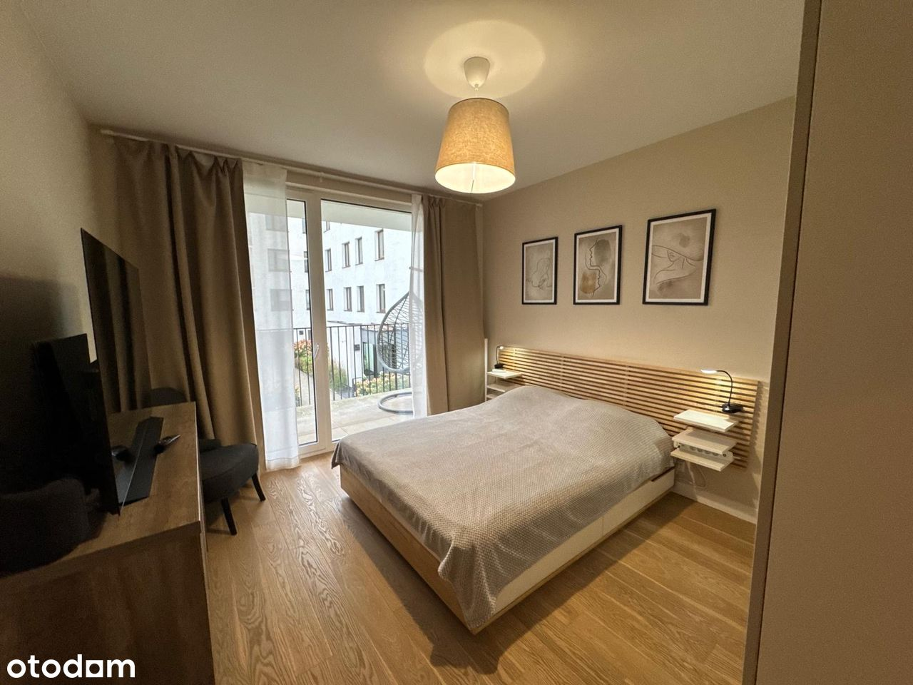
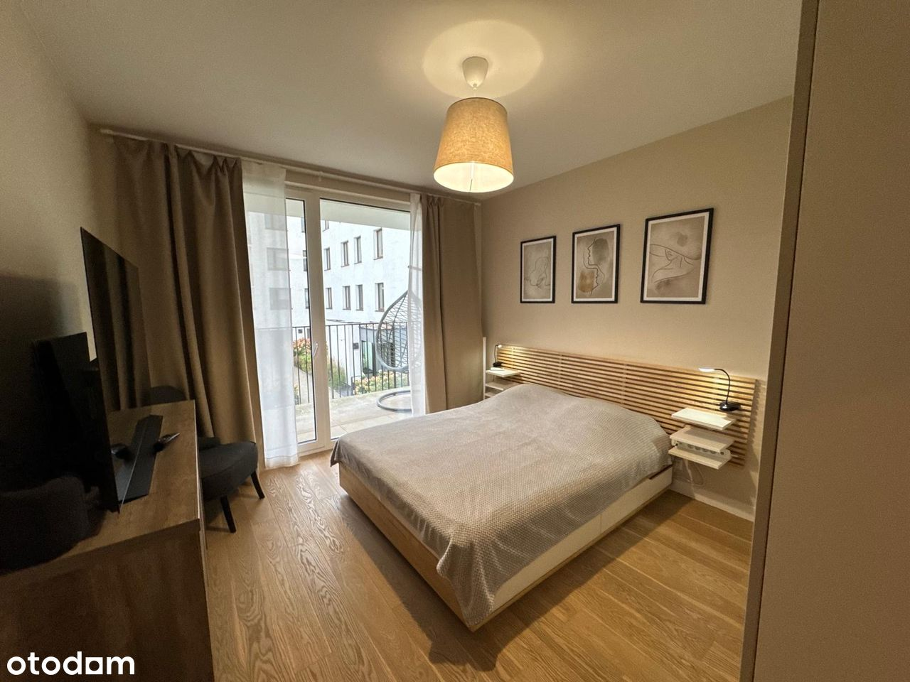
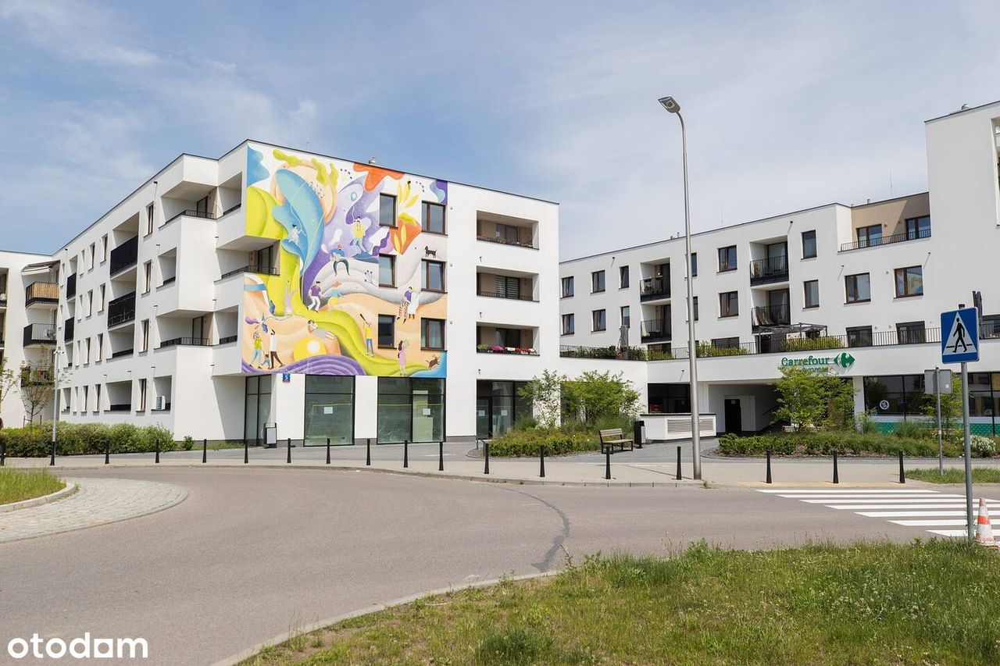
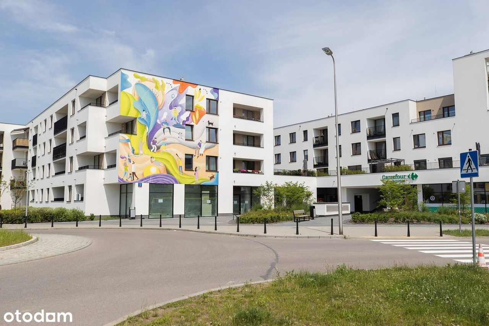

Apartament– wysoki standard, taras, 2 miejsca parkingowe, klimatyzacja
Pohulanka, Warszawa Elsnerów
1 274 925 PLN
75 m2
3 pokoje
1 piętro
WE SPEAK ENGLISH / МЫ ГОВОРИМ ПО-РУССКИ
-----------------------------------
Wyobraź sobie poranki, kiedy promienie słońca wpadają do salonu, a Ty w ciszy pijesz kawę na przestronnym tarasie, otoczony zielenią i spokojem. Wieczorem, po pracy, czeka na Ciebie prywatna sauna, kieliszek wina z własnej chłodziarki i kolacja na świeżym powietrzu.
To mieszkanie nie jest zwykłym adresem na mapie Warszawy. To Twój osobisty azyl, zaprojektowany i urządzony "dla siebie" – z dbałością o każdy szczegół, jakość materiałów i wygodę codziennego życia.
Opis mieszkania:
Na 75 m² znajdziesz wszystko, czego potrzebujesz, by żyć w pełnym komforcie:
- Przestronny salon z otwartą kuchnią i wyjściem na taras – serce domu, w którym spotyka się rodzina i przyjaciele. Kuchnia wyposażona w sprzęt AGD premium, kamienny blat o fakturze szczotkowanego kamienia i osobną lodówkę na wino.
- Taras idealny na poranne śniadania lub wieczorne kolacje przy świecach.
- Sypialnia główna z balkonem i widokiem na plac zabaw – idealna dla rodziców, którzy chcą mieć dzieci na oku.
- Druga sypialnia – doskonała jako pokój dziecka, gabinet do pracy zdalnej lub pokój gościnny.
- Dwie łazienki – jedna z wanną i ogrzewaniem podłogowym, druga z prysznicem i prywatną sauną.
- Klimatyzacja w każdym pokoju z niezależnym sterowaniem.
- Drewniane panele i brak progów – elegancja połączona z funkcjonalnością.
Do mieszkania przynależą dwa miejsca parkingowe w garażu podziemnym oraz komórka lokatorska.
Lokalizacja – Osiedle Wilno
To jedno z najbardziej kameralnych i przyjaznych osiedli na Targówku:
- niska zabudowa i zieleń,
- plac zabaw widoczny z balkonu,
- klimatyczne restauracje w zasięgu spaceru – od wyśmienitego sushi po soczyste burgery,
- przedszkola i szkoły w pobliżu,
- 10 minut pieszo do stacji SKM – w 5 minut jesteś na Warszawie Wileńskiej.
To miejsce, które łączy spokój podmiejskiego życia z bliskością centrum.
Szczegóły techniczne
- Powierzchnia: 75 m²
- Piętro: 1/3
- Winda
- Osiedle zamknięte z ochroną
Dodatkowo:
- Podwójne miejsce garażowe: 80,000
- Komórka lokatorska: 15,000
-----------------------------------
Imagine mornings when sunlight fills your living room, and you enjoy your coffee in peace on a spacious terrace surrounded by greenery and tranquility. In the evenings, after work, your private sauna awaits, along with a glass of wine from your own wine fridge and dinner under the open sky.
This apartment is not just another address on the map of Warsaw – it's your personal retreat, designed and furnished for yourself with attention to every detail, premium materials, and the comfort of everyday living.
Property description
Within 75 m² you'll find everything you need to live in complete comfort:
- Spacious living room with an open kitchen and access to the terrace – the heart of the home where family and friends come together. The kitchen features premium built-in appliances, a brushed stone countertop, and a dedicated wine fridge.
- Terrace perfect for morning breakfasts or candlelit dinners in the evening.
- Master bedroom with a balcony and a view of the playground – ideal for parents who want to keep an eye on their children.
- Second bedroom – perfect as a child's room, home office, or guest bedroom.
- Two bathrooms – one with a bathtub and underfloor heating, the other with a shower and private sauna.
- Air conditioning in every room with independent controls.
- Wooden floors and no thresholds – combining elegance with functionality.
The property includes two parking spaces in the underground garage and a storage unit.
Location – Wilno Estate
One of the most peaceful and family-friendly residential areas in Targówek:
- Low-rise buildings and lots of greenery
- Playground visible from the balcony
- Charming restaurants within walking distance – from excellent sushi to juicy burgers
- Preschools and schools nearby
- 10 minutes on foot to the SKM train station – just 5 minutes to Warszawa Wileńska station
A place that combines the calm of suburban living with the proximity of the city center.
Technical details
- Size: 75 m²
- Floor: 1/3
- Elevator
- Gated community with security
Additional:
- double parking space 80,000
- Storage unit 15,000
------------------------------------
Представьте утро, когда солнечный свет наполняет вашу гостиную, а вы наслаждаетесь кофе в тишине на просторной террасе, окружённой зеленью и спокойствием.
Вечером, после работы, вас ждёт собственная сауна, бокал вина из вашего винного холодильника и ужин под открытым небом.
Эта квартира - не просто ещё один адрес на карте Варшавы, это ваш личный оазис, созданный и обставленный с вниманием к каждой детали, с использованием премиальных материалов и с заботой о комфорте повседневной жизни.
Описание квартиры
На 75 м² вы найдёте всё необходимое для жизни в полном комфорте:
- Просторная гостиная с открытой кухней и выходом на террасу - сердце дома, где собираются семья и друзья. Кухня оснащена встроенной техникой премиум-класса, рабочей поверхностью из шлифованного камня и отдельным винным холодильником.
- Терраса, идеально подходящая для завтраков на свежем воздухе или ужинов при свечах.
- Главная спальня с балконом и видом на детскую площадку - идеальное решение для родителей, которые хотят присматривать за детьми.
- Вторая спальня - подойдёт как детская, кабинет для работы или гостевая.
- Две ванные комнаты - одна с ванной и подогревом пола, вторая с душем и собственной сауной.
- Кондиционер в каждой комнате с индивидуальным управлением.
- Деревянные полы и отсутствие порогов - сочетание элегантности и функциональности.
- Квартира включает два парковочных места в подземном гараже и кладовую.
Локация - Жилой комплекс Wilno
Один из самых спокойных и семейных районов Таргувка:
- Малоквартирные дома и много зелени
- Детская площадка прямо под окнами
- Очаровательные рестораны в пешей доступности - от отличного суши до сочных бургеров
- Рядом детские сады и школы
- 10 минут пешком до станции SKM - всего 5 минут до Warszawa Wileńska
- Место, которое сочетает уют пригородной жизни с близостью к центру города.
Технические данные
- Площадь: 75 м²
- Этаж: 1/3
- Лифт
- Закрытая охраняемая территория
Дополнительно
- Двойное парковочное место - 80 000 zł
- Кладовая - 15 000 zł
 



 



 
